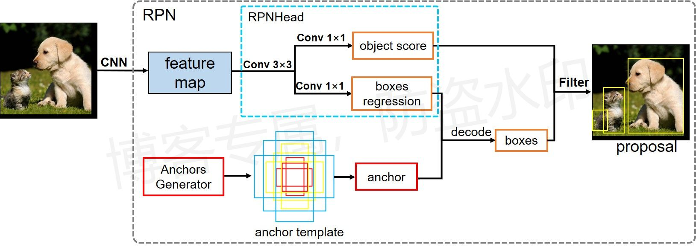
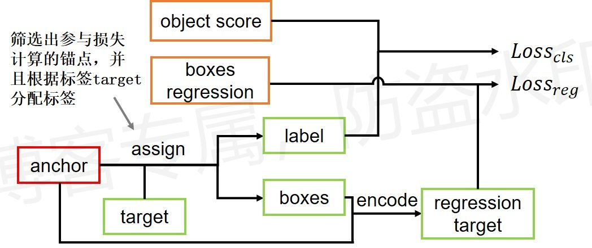

Faster R-CNN：RPN模块¶
简介¶
目的：预测出图像中目标所在的位置
输入：特征图
输出：物体边界框，大致将图像中的物体标注出来
模块流程：

损失计算过程：

流程图原创，使用请告知
细节¶
网络结构
- 初始默认只采用最后一层特征进行预测，锚点尺度为128、256、512，每种尺度再设置3种比例\{1:2、1:1、2:1\}，因此每个特征像素点会对应9个锚点；
- RPN中锚点预测类别只有两类，前景和背景；
- 每个锚点对应1组回归参数，对应前景的回归参数；
- 网络预测的前景proposals再传入NMS运算，去除冗余的边界框，NMS阈值默认0.7，最后按预测分数筛选出前2000个proposals传入ROI Head模块；
训练阶段
- 在锚点匹配中，与物体边界框IOU值大于0.7的锚点设置为前景锚点（正样本）、IOU值小于0.3的设置为背景锚点（负样本）；
- 在训练RPN时，每张图随机采样256个锚点进行训练，正负样本比例默认1:1，如果正样本少于128，则用负样本填充。（这里可以用Focal loss改进）；
代码¶
注：RPN模块代码来源于PyTorch官方实现的Faster R-CNN算法，总的网络模型可由如下函数指令直接调取：
torchvision.models.detection.FasterRCNN()
参考链接：
- https://www.bilibili.com/video/BV1of4y1m7nj
- https://github.com/WZMIAOMIAO/deep-learning-for-image-processing
RPN模块结构¶
class RegionProposalNetwork(torch.nn.Module):
__annotations__ = {
'box_coder': det_utils.BoxCoder,
'proposal_matcher': det_utils.Matcher,
'fg_bg_sampler': det_utils.BalancedPositiveNegativeSampler,
'pre_nms_top_n': Dict[str, int],
'post_nms_top_n': Dict[str, int],
}
def __init__(self, anchor_generator, head,
fg_iou_thresh, bg_iou_thresh, # fg前景目标，bg背景目标
batch_size_per_image, positive_fraction, # RPN计算损失时，使用的样本数和正样本占比
pre_nms_top_n, post_nms_top_n, nms_thresh, score_thresh=0.0): # nms处理之前，针对每个特征层保留的目标个数，nms之后所有特征层剩余的数量，nms处理时，取定的阈值
super(RegionProposalNetwork, self).__init__()
# 锚点生成器
self.anchor_generator = anchor_generator
# RPN检测头
self.head = head
# 定义边界框的编码-解码方法
self.box_coder = det_utils.BoxCoder(weights=(1.0, 1.0, 1.0, 1.0))
# use during training
# 计算anchors与真实bbox的iou(两组框之间的iou)
self.box_similarity = box_ops.box_iou
# 判断正负样本(前后景)所用到的方法
self.proposal_matcher = det_utils.Matcher(
# 当iou大于fg_iou_thresh(0.7)时视为正样本(前景)
fg_iou_thresh,
# 当iou小于bg_iou_thresh(0.3)时视为负样本(背景)
bg_iou_thresh,
allow_low_quality_matches=True
)
# 计算损失时，对正样本和负样本的采样的方法(总数多少，正样本多少比例)
self.fg_bg_sampler = det_utils.BalancedPositiveNegativeSampler(
batch_size_per_image, positive_fraction # 256, 0.5
)
# NMS处理之前，每层特征层最多保留的预测目标数量(依据预测分数筛选)
self._pre_nms_top_n = pre_nms_top_n
# NMS处理后，所有特征层最多保留的预测目标总数(同样根据预测分数筛选)
self._post_nms_top_n = post_nms_top_n
# NMS处理时的阈值
self.nms_thresh = nms_thresh
# 预测分数下限，小于该值的预测将被过滤掉，不进入后续的ROI Head模块
self.score_thresh = score_thresh
# 预测目标边界框的下限，如果目标边界框高宽有一个小于此值，则也被过滤掉，不进入后续的ROI Head
self.min_size = 1.
def forward(self,
images, # type: ImageList
features, # type: Dict[str, Tensor]
targets=None # type: Optional[List[Dict[str, Tensor]]]
):
# type: (...) -> Tuple[List[Tensor], Dict[str, Tensor]]
"""
Arguments:
images (ImageList): images for which we want to compute the predictions
features (Dict[Tensor]): features computed from the images that are
used for computing the predictions. Each tensor in the list
correspond to different feature levels
targets (List[Dict[Tensor]): ground-truth boxes present in the image (optional).
If provided, each element in the dict should contain a field `boxes`,
with the locations of the ground-truth boxes.
Returns:
boxes (List[Tensor]): the predicted boxes from the RPN, one Tensor per
image.
losses (Dict[Tensor]): the losses for the model during training. During
testing, it is an empty dict.
"""
# RPN uses all feature maps that are available
# features是所有预测特征层组成的OrderedDict，如果使用fpn的话，共有5个特征层，即该字典中有五个数据
features = list(features.values())
# 预测每个预测特征层上每个像素点存在目标的概率和bboxes regression边界框回归参数
# objectness和pred_bbox_deltas都是list。objectness尺寸为(b,锚点数,h,w),pred_bbox_deltas尺寸为(b,4*锚点数,h,w)
objectness, pred_bbox_deltas = self.head(features)
# 生成一个batch图像的所有anchors信息,list(tensor)元素个数等于batch_size。
# 得到每个图片上的锚点框的坐标信息
# anchors数据类型为列表格式，列表长度为batch，列表中每个元素尺寸均为(原图上锚点数量,4)，锚点数量与参与预测的特征图宽高、ratios数量有关，这里将所有特征层上的锚点合并了
anchors = self.anchor_generator(images, features)
# batch_size
num_images = len(anchors)
# numel() Returns the total number of elements in the input tensor.
# 计算每个预测特征层上的对应的anchors数量。特征层长*宽*锚点数
num_anchors_per_level_shape_tensors = [o[0].shape for o in objectness]
# 将num_anchors_per_level中的原诉求和，就是anchors中列表元素的第一维度
num_anchors_per_level = [s[0] * s[1] * s[2] for s in num_anchors_per_level_shape_tensors]
# 调整内部tensor格式以及shape。以objectness为例：从[b,3,h,w]变为[锚点数,1]
objectness, pred_bbox_deltas = concat_box_prediction_layers(objectness,
pred_bbox_deltas)
# 将预测的bbox回归参数应用到anchors上得到最终预测的边界框坐标。回归参数与锚点框结合，得到物体框，原始图像上的绝对坐标
# 注意这里切断梯度，后续ROI模块的损失不会影响到RPN边界框回归
proposals = self.box_coder.decode(pred_bbox_deltas.detach(), anchors)
# 调整数据形状，在最后一个维度表示坐标信息
proposals = proposals.view(num_images, -1, 4)
# 此时proposals已经代表物体框了
# 筛除小boxes框，nms处理，根据预测概率获取前post_nms_top_n个目标
# 这里选取两千个只是为了送给后面的roi用于进一步预测类别和校正目标框
# 而RPN计算损失时是传入所有的点计算(当然计算损失时还会再筛选正负样本，在compute_loss方法中筛选)
boxes, scores = self.filter_proposals(proposals, objectness, images.image_sizes, num_anchors_per_level)
losses = {}
# 如果是训练阶段的话，需要计算损失
if self.training:
# 必须有标签
assert targets is not None
# 计算每个anchors最匹配的gt(标签框)
# labels表示每个锚点的类别标签，前景(1.0)，背景(0.0)以及丢弃的anchors(-1.0，IOU值处于中间)
# matched_gt_boxes表示靠近每个锚点的边界框坐标，背景和要丢弃的锚点均设置为第一个目标的边界框坐标，后续用不到
# 这里的边界框坐标是真实标签坐标，不是回归参数，后续还需要对每个锚点都计算一次回归参数
# 从而让锚点对应的区域与目标真实区域重合起来
# 因此RPN就是通过预测位于目标区域周围的锚点以及其回归参数来准确的预测目标区域。
labels, matched_gt_boxes = self.assign_targets_to_anchors(anchors, targets)
# 结合anchors以及对应的gt，计算regression参数。计算锚点与匹配的gt框之间的回归参数。
# 即指定的锚点与锚点对应的gt框之间的标准回归参数，得到RPN的回归标签，用于计算损失
# 这里相当于一个逆运算，将真实坐标值转化为回归参数
# 即使同一个物体，面对不同的锚点将会得到不同的回归参数
regression_targets = self.box_coder.encode(matched_gt_boxes, anchors)
# 计算RPN的分类损失和回归损失，传入:预测的目标分数，预测的坐标回归参数，目标标签(前后景标签)，回归参数标签
loss_objectness, loss_rpn_box_reg = self.compute_loss(
objectness, pred_bbox_deltas, labels, regression_targets
)
losses = {
"loss_objectness": loss_objectness,
"loss_rpn_box_reg": loss_rpn_box_reg
}
# boxes返回的是绝对坐标下的物体框，非回归参数
return boxes, losses
RPN检测头¶
class RPNHead(nn.Module):
"""
add a RPN head with classification and regression
通过滑动窗口计算预测目标概率与bbox regression边界框回归参数
Arguments:
in_channels: 输入特征图的通道数
num_anchors: 锚点数量，表示每个像素点对应多少个检测框，与size数量和ratios数量有关(乘积)
一般一个特征层对应一个size，因此锚点数量由检测框高宽比例ratios的数量决定
这里默认3个，比例分别为[0.5,1.0,1.5]，因此一个像素点对应三个锚点
"""
def __init__(self, in_channels, num_anchors):
super(RPNHead, self).__init__()
# 3x3 滑动窗口
self.conv = nn.Conv2d(in_channels, in_channels, kernel_size=3, stride=1, padding=1)
# 这里num_anchors变量默认为3(一个特征层对应一个size，一个size对应三个ratios，因此一共三个锚点)，相当于一个检测头对一个点只检测三次
# size与感受野类似，每个特征层都对应一个感受野，而特征图上每个像素点均对应三个ratios，即每个像素点对应三个锚点检测框，
# 可以通过修改ratios来修改每个像素点对应的检测框形状(数量)
# 计算预测的目标分数（这里的目标只是指前景或者背景），生成k个分数，这里的k表示每个特征层中size与ratios的乘积
self.cls_logits = nn.Conv2d(in_channels, num_anchors, kernel_size=1, stride=1)
# 计算预测的目标bbox regression参数，生成4k个参数
self.bbox_pred = nn.Conv2d(in_channels, num_anchors * 4, kernel_size=1, stride=1)
# 初始化参数
for layer in self.children():
if isinstance(layer, nn.Conv2d):
torch.nn.init.normal_(layer.weight, std=0.01)
torch.nn.init.constant_(layer.bias, 0)
def forward(self, x): # 传入预测特征层
# type: (List[Tensor]) -> Tuple[List[Tensor], List[Tensor]]
# 初始化存储预测分数和边界框回归参数的变量
logits = []
bbox_reg = []
# 遍历每个预测特征层
for i, feature in enumerate(x):
# 首先经过一层卷积与relu
t = F.relu(self.conv(feature))
# 之后分别经过卷积，得到预测分数和对应的边界框回归参数
# 这里的预测分数与回归参数均是像素点级别的，即特征图上每个像素点均对应一个分数和四个回归参数
logits.append(self.cls_logits(t))
bbox_reg.append(self.bbox_pred(t))
# 依次返回预测分数和边界框回归参数
# 尺寸分别为(b,k,w,h),(b,4k,w,h)，b表示batch，k表示特征图上的锚点数量，即一个像素点代表多少个锚点检测框
return logits, bbox_reg
合并预测结果¶
def concat_box_prediction_layers(box_cls, box_regression):
# type: (List[Tensor], List[Tensor]) -> Tuple[Tensor, Tensor]
"""
对box_cla和box_regression两个list中的每个预测特征层的预测信息
的tensor排列顺序以及shape进行调整 -> [N, -1, C]
Args:
box_cls: 每个预测特征层上的预测目标概率
box_regression: 每个预测特征层上的预测目标bboxes regression参数
Returns:
"""
box_cls_flattened = [] # 存储预测分数
box_regression_flattened = [] # 存储预测框
# 遍历每个预测特征层
for box_cls_per_level, box_regression_per_level in zip(box_cls, box_regression):
# [batch_size, anchors_num_per_position * classes_num, height, width]
# 注意，当计算RPN中的proposal时，classes_num=1,只区分目标和背景
N, AxC, H, W = box_cls_per_level.shape
# # [batch_size, anchors_num_per_position * 4, height, width]
Ax4 = box_regression_per_level.shape[1]
# anchors_num_per_position，这里表示每个像素点上的锚点数量，即ratios的长度，默认3
A = Ax4 // 4
# classes_num。判断是否是前景，因此只有一个类
C = AxC // A
# [N, -1, C]，调换维度信息，便于后面与锚点结合，也便于过滤，这里C=1，表示是否是前景
box_cls_per_level = permute_and_flatten(box_cls_per_level, N, A, C, H, W)
box_cls_flattened.append(box_cls_per_level)
# [N, -1, C]，和上面一样，调换维度，这里C=4，表示四个回归参数
box_regression_per_level = permute_and_flatten(box_regression_per_level, N, A, 4, H, W)
box_regression_flattened.append(box_regression_per_level)
# flatten(0, -2)表示一直展平到倒数第二个维度。box_cls综合了所有的预测值，box_regression综合所有的预测框
# 相当于得到(-1, C)的数据，分类与回归损失均是这样
box_cls = torch.cat(box_cls_flattened, dim=1).flatten(0, -2) # start_dim, end_dim
box_regression = torch.cat(box_regression_flattened, dim=1).reshape(-1, 4)
return box_cls, box_regression
调整数据维度
def permute_and_flatten(layer, N, A, C, H, W):
# type: (Tensor, int, int, int, int, int) -> Tensor
"""
调整tensor顺序，并进行reshape
Args:
layer: 预测特征层上预测的目标概率或bboxes regression参数
N: batch_size
A: anchors_num_per_position
C: classes_num or 4(bbox coordinate)
H: height
W: width
Returns:
layer: 调整tensor顺序，并reshape后的结果[N, -1, C]
"""
# view和reshape功能是一样的，先展平所有元素在按照给定shape排列
# view函数只能用于内存中连续存储的tensor，permute等操作会使tensor在内存中变得不再连续，此时就不能再调用view函数
# reshape则不需要依赖目标tensor是否在内存中是连续的
# [batch_size, anchors_num_per_position * (C or 4), height, width]
layer = layer.view(N, -1, C, H, W)
# 调换tensor维度。调换维度信息，得到[N, H, W, -1, C]
layer = layer.permute(0, 3, 4, 1, 2)
layer = layer.reshape(N, -1, C) # 可以用于不连续的数据
return layer
筛选边界框坐标¶
注意：这里筛选出两千个(默认)只是为了送给后面的roi用于进一步预测类别和校正目标框，而RPN计算损失时是传入所有的点计算(当然计算损失时还会再筛选正负样本个数及比例，在compute_loss方法中筛选)
先从每层筛选出预测分数前pre_nms_top_n个边界框，之后再经过NMS处理，过滤掉重合率高的，之后再依据预测分数筛选，筛选出前rpn_post_nms_top_n个坐标
def filter_proposals(self, proposals, objectness, image_shapes, num_anchors_per_level):
# type: (Tensor, Tensor, List[Tuple[int, int]], List[int]) -> Tuple[List[Tensor], List[Tensor]]
"""
筛除小boxes框，nms处理，根据预测概率获取前post_nms_top_n个目标
Args:
proposals: 预测的bbox坐标
objectness: 预测的目标概率
image_shapes: batch中每张图片的size信息
num_anchors_per_level: 每个预测特征层上预测anchors的数目
Returns:
final_boxes: 筛选后的坐标框
final_scores: 对应的预测分数
"""
# batch
num_images = proposals.shape[0]
# 存储数据的设备信息
device = proposals.device
# 切断梯度，只获取数值，输入到fast r-cnn中
objectness = objectness.detach()
# 调整维度，(batch,锚点总数)
objectness = objectness.reshape(num_images, -1)
# levels负责记录分隔不同预测特征层上的anchors索引信息。为了后续把不同特征层的预测物体框分开
# levels表示一个列表，列表长度为参与预测的特征层数量，而里面的数据长度为相应特征层上的锚点数量，数值为特征层编号，从0开始
levels = [torch.full((n, ), idx, dtype=torch.int64, device=device)
for idx, n in enumerate(num_anchors_per_level)]
# 将生成的特征层编号合并，通过level来区分每个预测边界框属于哪个特征层，相当于对每个预测结果做了标记
levels = torch.cat(levels, 0)
# 在第一个维度上进行复制，复制batch份
levels = levels.reshape(1, -1).expand_as(objectness)
# 获取每张预测特征图上预测概率排前pre_nms_top_n的anchors索引值
top_n_idx = self._get_top_n_idx(objectness, num_anchors_per_level)
# image_range表示batch索引
image_range = torch.arange(num_images, device=device)
# 加一个维度，变成二维数组，就一列，每行表示同一批batch中不同图片的标签，用于后续的索引
batch_idx = image_range[:, None] # [batch_size, 1]
# 根据每个预测特征层预测概率排前pre_nms_top_n的anchors索引值获取相应概率信息
# 取得筛选后的预测信息
objectness = objectness[batch_idx, top_n_idx]
# 这里执行同样的操作，为了记录分隔符，即记录每个预测属于哪个特征层
levels = levels[batch_idx, top_n_idx]
# 预测概率排前pre_nms_top_n的anchors索引值获取相应bbox坐标信息
proposals = proposals[batch_idx, top_n_idx]
# 将预测分数经过sigmoid归一化处理
objectness_prob = torch.sigmoid(objectness)
# 用于存储经过最终筛选的边界框坐标和预测分数
final_boxes = []
final_scores = []
# 遍历每张图像的相关预测信息，按batch遍历
for boxes, scores, lvl, img_shape in zip(proposals, objectness_prob, levels, image_shapes):
# 调整预测的boxes信息，将越界的坐标调整到图片边界上，将预测框限制在图片内部
boxes = box_ops.clip_boxes_to_image(boxes, img_shape)
# 返回boxes满足宽，高都大于min_size的索引，删除小目标。注意第一行只获取索引，后面利用索引筛选
keep = box_ops.remove_small_boxes(boxes, self.min_size)
# 依次获取正常的边界框坐标、分数、特征层归属
boxes, scores, lvl = boxes[keep], scores[keep], lvl[keep]
# 移除小概率boxes，参考下面这个链接
# https://github.com/pytorch/vision/pull/3205
keep = torch.where(torch.ge(scores, self.score_thresh))[0] # ge: >= 大于等于
# 和上面一样，根据索引获取筛选后的数据
boxes, scores, lvl = boxes[keep], scores[keep], lvl[keep]
# 非极大值抑制处理——NMS处理
keep = box_ops.batched_nms(boxes, scores, lvl, self.nms_thresh)
# 利用切片的方式，获取前post_nms_top_n个目标(或者获取所有的，NMS后坐标框数量小于post_nms_top_n的话)
keep = keep[: self.post_nms_top_n()]
boxes, scores = boxes[keep], scores[keep]
# 储存数据
final_boxes.append(boxes)
final_scores.append(scores)
# 最后返回经过筛选后的边界框以及分数
return final_boxes, final_scores
NMS前的边界框筛选¶
def _get_top_n_idx(self, objectness, num_anchors_per_level):
# type: (Tensor, List[int]) -> Tensor
"""
获取每张预测特征图上预测概率排前pre_nms_top_n的anchors索引值
Args:
objectness: Tensor(每张图像的预测目标概率信息 )
num_anchors_per_level: List（每个预测特征层上的预测的anchors个数）
Returns:
"""
# 记录每个预测特征层上预测目标概率前pre_nms_top_n的索引信息
r = []
offset = 0
# 遍历每个预测特征层上的预测目标概率信息
for ob in objectness.split(num_anchors_per_level, 1): # 对objectness在第一维度做分割，保留batch信息
if torchvision._is_tracing():
num_anchors, pre_nms_top_n = _onnx_get_num_anchors_and_pre_nms_top_n(ob, self.pre_nms_top_n())
else:
# 预测特征层上的预测的anchors个数
num_anchors = ob.shape[1]
# 如果num_anchors小于pre_nms_top_n(参与nms前，每层最多保留的预测框数量，默认2000)的话，就取全部的num_anchors
pre_nms_top_n = min(self.pre_nms_top_n(), num_anchors)
# Returns the k largest elements of the given input tensor along a given dimension
# 训练保留2000，测试保留1000。topk表示取前k个最大的值的值和索引，这里只提取出索引来
_, top_n_idx = ob.topk(pre_nms_top_n, dim=1)
# 下面两步很关键，对当前层的索引做偏移，从单个层来看，当前层索引从0开始，从整体来看，当前层的索引是从前一层最后一个数的索引开始的
# offset表示偏移量，每一层的偏移。第二层预测值的索引需要加上第一层预测值的总数。(基于前面所有的)
r.append(top_n_idx + offset)
offset += num_anchors
# 将筛选到的边界框做合并，之后返回，再进行NMS处理
return torch.cat(r, dim=1)
修正异常边界框¶
调整越界边界框
def clip_boxes_to_image(boxes, size):
# type: (Tensor, Tuple[int, int]) -> Tensor
"""
输入裁剪预测的boxes信息，将越界的坐标调整到图片边界上
Arguments:
boxes (Tensor[N, 4]): 边界框坐标 (x1, y1, x2, y2)
size (Tuple[height, width]): 图片尺寸
Returns:
clipped_boxes (Tensor[N, 4]): 调整后的坐标
"""
dim = boxes.dim()
# 得到x坐标，尺寸为(边界框数量,2)
boxes_x = boxes[..., 0::2]
# 得到y坐标，尺寸和x尺寸相同
boxes_y = boxes[..., 1::2]
# 得到高、宽，用于限制x，y坐标
height, width = size
if torchvision._is_tracing():
boxes_x = torch.max(boxes_x, torch.tensor(0, dtype=boxes.dtype, device=boxes.device))
boxes_x = torch.min(boxes_x, torch.tensor(width, dtype=boxes.dtype, device=boxes.device))
boxes_y = torch.max(boxes_y, torch.tensor(0, dtype=boxes.dtype, device=boxes.device))
boxes_y = torch.min(boxes_y, torch.tensor(height, dtype=boxes.dtype, device=boxes.device))
else: # 一般执行这里
# 限制x坐标范围在[0,width]之间
boxes_x = boxes_x.clamp(min=0, max=width)
# 限制y坐标范围在[0,height]之间
boxes_y = boxes_y.clamp(min=0, max=height)
# 合并
clipped_boxes = torch.stack((boxes_x, boxes_y), dim=dim)
# 将数据形状变为与输入数据相同的形状
return clipped_boxes.reshape(boxes.shape)
删除过小的目标
def remove_small_boxes(boxes, min_size):
# type: (Tensor, float) -> Tensor
"""
移除宽高小于指定阈值的边界框
Arguments:
boxes (Tensor[N, 4]): 边界框坐标,(x1, y1, x2, y2)
min_size (float): 最小边长的阈值
Returns:
keep (Tensor[K]): 正常边界框的索引，即边长大于min_size的边界框
"""
# 预测boxes的宽和高
ws, hs = boxes[:, 2] - boxes[:, 0], boxes[:, 3] - boxes[:, 1]
# 当满足宽，高都大于给定阈值时为True
keep = torch.logical_and(torch.ge(ws, min_size), torch.ge(hs, min_size))
# 这里搜寻非零元素的索引，即True的索引
# [0]表示获取True元素第一维度的索引列表
keep = torch.where(keep)[0]
# 注意，这里只返回索引
return keep
NMS处理¶
注意:这里同一个批次中可能会有由不同特征层预测的边界框，此时属于不同特征层的特征需要看成不同的类别，NMS处理时不能跨类处理，即需要对原始边界框做一个偏移，将属于不同特征层的边界框偏移到空间中不同的位置，保证特征层之间预测的边界框没有交叉。
def batched_nms(boxes, scores, idxs, iou_threshold):
# type: (Tensor, Tensor, Tensor, float) -> Tensor
"""
对于一个批次batch执行NMS操作
Parameters
----------
boxes : Tensor[N, 4]
边界框坐标，(x1, y1, x2, y2)
scores : Tensor[N]
每个边界框的预测分数
idxs : Tensor[N]
每个边界框的类别，即特征层的序号，用于后续的偏移
iou_threshold : float
NMS处理中使用到的IOU阈值
Returns
-------
keep : Tensor
经过NMS处理后的边界框索引
"""
if boxes.numel() == 0:
return torch.empty((0,), dtype=torch.int64, device=boxes.device)
# 如前面所说，为了独立在每个特征层执行NMS，需要为所有的边界框添加偏移量
# 偏移量只与特征层的序号有关，并且需要足够大，以便让所有层之间互不交叉
# 获取所有boxes中最大的坐标值，当做偏移基数
max_coordinate = boxes.max()
# 为每一个类别/每一层生成一个很大的偏移量
# 这里的to只是让生成tensor的dytpe和device与boxes保持一致
offsets = idxs.to(boxes) * (max_coordinate + 1)
# boxes加上对应层的偏移量后，保证不同类别/层之间boxes不会有重合的现象。
# 针对每一层的框坐标都不会有重叠。第二层坐标数值是基于第一层的数值(以max_coordinate为分割单位)
# 加上特征偏置项，此时各个层的边界框坐标将互相分离
boxes_for_nms = boxes + offsets[:, None]
# 只需要执行一次nms，不需要针对所有的特征层都执行一次
keep = nms(boxes_for_nms, scores, iou_threshold)
# 返回经过NMS过滤后的边界框索引
return keep
NMS操作直接调用torch里面封装好的函数即可
def nms(boxes, scores, iou_threshold):
# type: (Tensor, Tensor, float) -> Tensor
# 只需传入边界框坐标、分数、IOU阈值即可
return torch.ops.torchvision.nms(boxes, scores, iou_threshold)
计算RPN损失¶
锚点与边界框标签的匹配¶
def assign_targets_to_anchors(self, anchors, targets):
# type: (List[Tensor], List[Dict[str, Tensor]]) -> Tuple[List[Tensor], List[Tensor]]
"""
anchors表示所有的预设锚点，这里匹配的是预先设定的标准模板图，所有模板都对应原图的一个区域
用于与目标相匹配，选取比较靠近目标的锚点，后续再利用回归参数将靠近目标的锚点所代表的区域修正到准确的目标区域
计算每个anchors最匹配的gt，并划分为正样本，背景以及废弃的样本
Args：
anchors: (List[Tensor])
targets: (List[Dict[Tensor])
Returns:
labels: 标记anchors归属类别（1, 0, -1分别对应正样本，背景，废弃的锚点）
注意，在RPN中只有前景和背景，所有正样本的类别都是1，0代表背景
matched_gt_boxes：与anchors匹配的gt
"""
# 初始化锚点类别和与锚点匹配的标签
labels = []
matched_gt_boxes = []
# 按batch遍历
for anchors_per_image, targets_per_image in zip(anchors, targets):
# 提取标签中的矩形框坐标
gt_boxes = targets_per_image["boxes"]
# 如果图片无目标，则类别与边界框全部归为0
if gt_boxes.numel() == 0:
device = anchors_per_image.device
matched_gt_boxes_per_image = torch.zeros(anchors_per_image.shape, dtype=torch.float32, device=device)
labels_per_image = torch.zeros((anchors_per_image.shape[0],), dtype=torch.float32, device=device)
else:
# 计算anchors与真实bbox的iou信息，即交集面积比例，返回图片中每个对象与每个锚点的IOU值，尺寸为[该图目标数量,预设锚点数量]
match_quality_matrix = box_ops.box_iou(gt_boxes, anchors_per_image)
# 计算每个anchors与gt匹配iou最大的索引（如果iou<0.3索引置为-1，0.3<iou<0.7索引为-2）
# 预测框与标签框匹配，返回匹配信息，尺寸与上个一致[该图目标数量,预设锚点数量]
# 如果锚点为前景，则数值为匹配到的对象序号；如果为背景则数值为-1；如果该锚点被丢弃(处于阈值之间)，则数值为-2
matched_idxs = self.proposal_matcher(match_quality_matrix)
# 这里使用clamp设置下限0是为了方便取每个anchors对应的gt_boxes信息，用于计算边界框回归损失
# 负样本和舍弃的样本都是负值，所以为了防止越界直接置为0，默认匹配第一个box
# 因为后期不用这些样本来计算回归损失，只利用正样本计算回归损失，因此无影响
# 后面是通过labels_per_image变量来记录正样本位置的，
# matched_gt_boxes_per_image表示每个锚点所匹配到的box坐标。
matched_gt_boxes_per_image = gt_boxes[matched_idxs.clamp(min=0)]
# 记录所有anchors匹配后的标签
labels_per_image = matched_idxs >= 0
# 正锚点样本处标记为1
labels_per_image = labels_per_image.to(dtype=torch.float32)
# background (negative examples) 得到背景索引
bg_indices = matched_idxs == self.proposal_matcher.BELOW_LOW_THRESHOLD # -1
# 负锚点样本处标记为0
labels_per_image[bg_indices] = 0.0
# IOU值在两个阈值之间，要丢弃的样本
inds_to_discard = matched_idxs == self.proposal_matcher.BETWEEN_THRESHOLDS # -2
# 丢弃锚点样本设置为-1
labels_per_image[inds_to_discard] = -1.0
# 这里的label表示每个锚点正负样本的划分
# matched_gt_boxes_per_image表示每个锚点与相匹配的目标框
labels.append(labels_per_image)
matched_gt_boxes.append(matched_gt_boxes_per_image)
# 返回锚点标签与锚点匹配的box坐标(标签框的坐标)
return labels, matched_gt_boxes
计算损失¶
def compute_loss(self, objectness, pred_bbox_deltas, labels, regression_targets):
# type: (Tensor, Tensor, List[Tensor], List[Tensor]) -> Tuple[Tensor, Tensor]
"""
计算RPN损失，包括类别损失（前景与背景），bbox regression边界框回归损失
Arguments:
objectness (Tensor)：每个锚点预测的前景概率
pred_bbox_deltas (Tensor)：每个锚点预测的bbox regression
labels (List[Tensor])：每个锚点的真实的标签 1, 0, -1（batch中每一张图片的labels对应List的一个元素中）
regression_targets (List[Tensor])：真实的边界框回归损失bbox regression
Returns:
objectness_loss (Tensor) : 类别损失
box_loss (Tensor)：边界框回归损失
"""
# 按照给定的batch_size_per_image, positive_fraction筛选特定比例的正负样本
# 分别返回正样本和负样本的mask，保证负样本不占主导
sampled_pos_inds, sampled_neg_inds = self.fg_bg_sampler(labels)
# 将一个batch中的所有正负样本List(Tensor)分别拼接在一起，并获取相应的索引
sampled_pos_inds = torch.where(torch.cat(sampled_pos_inds, dim=0))[0]
sampled_neg_inds = torch.where(torch.cat(sampled_neg_inds, dim=0))[0]
# 将参与损失计算的正负样本索引拼接在一起，注意，这里拼接的是索引
sampled_inds = torch.cat([sampled_pos_inds, sampled_neg_inds], dim=0)
# 将预测得到的分数展平
objectness = objectness.flatten()
# 将同一个batch里的所有锚点标签合并
labels = torch.cat(labels, dim=0)
regression_targets = torch.cat(regression_targets, dim=0)
# 计算边界框回归损失
box_loss = det_utils.smooth_l1_loss(
pred_bbox_deltas[sampled_pos_inds], # 正样本的位置
regression_targets[sampled_pos_inds], # 真实gt相对于锚点的位置
beta=1 / 9,
size_average=False,
) / (sampled_inds.numel())
# 计算目标预测概率损失，交叉熵损失
objectness_loss = F.binary_cross_entropy_with_logits(
objectness[sampled_inds], labels[sampled_inds]
)
# 依次返回RPN分类损失和边界框回归损失
return objectness_loss, box_loss
平滑的L1损失
这里其实也可以直接调用nn.SmoothL1Loss
def smooth_l1_loss(input, target, beta: float = 1. / 9, size_average: bool = True):
# 首先求预测值与标签值之间的L1距离
n = torch.abs(input - target)
# 根据距离与beta的相对大小，返回不同的值
cond = torch.lt(n, beta)
# 如果距离小于beta，则返回0.5 * n ** 2 / beta，否则返回n - 0.5 * beta
loss = torch.where(cond, 0.5 * n ** 2 / beta, n - 0.5 * beta)
if size_average:
return loss.mean()
return loss.sum()
筛选特定比例的正负样本¶
class BalancedPositiveNegativeSampler(object):
"""
计算损失时，正负样本所占的比例，确保正样本占比不会太低
"""
def __init__(self, batch_size_per_image, positive_fraction):
# type: (int, float) -> None
"""
Arguments:
batch_size_per_image (int): 每张图片参与计算损失的锚点数量
positive_fraction (float): 期望的正样本占比
"""
self.batch_size_per_image = batch_size_per_image
self.positive_fraction = positive_fraction
def __call__(self, matched_idxs):
# type: (List[Tensor]) -> Tuple[List[Tensor], List[Tensor]]
"""
Arguments:
matched idxs: 锚点标签
Returns:
pos_idx (list[tensor]): 被采到的正样本
neg_idx (list[tensor]): 被采到的负样本
为每个图像随机采样参与损失计算的锚点
"""
pos_idx = []
neg_idx = []
# 遍历每张图像的matched_idxs
for matched_idxs_per_image in matched_idxs:
# >= 1的为正样本(这里正样本其实为1)
# 这里的torch.where功能和nonzero类似，返回非零元素索引
# 正样本的索引
positive = torch.where(torch.ge(matched_idxs_per_image, 1))[0]
# = 0的为负样本
# 负样本的索引
negative = torch.where(torch.eq(matched_idxs_per_image, 0))[0]
# 指定正样本的数量，总数乘以比例
num_pos = int(self.batch_size_per_image * self.positive_fraction)
# 如果正样本数量不够就直接采用所有正样本
num_pos = min(positive.numel(), num_pos)
# 指定负样本数量
num_neg = self.batch_size_per_image - num_pos
# 如果负样本数量不够就直接采用所有负样本
num_neg = min(negative.numel(), num_neg)
# .numel()表示返回元素的数目，torch.randperm表示返回一个0到n-1的随机数组，这里相当于对原正负样本进行打乱
# 随机选择指定数量的正负样本，随机排序，之后选取前num_个
perm1 = torch.randperm(positive.numel(), device=positive.device)[:num_pos]
perm2 = torch.randperm(negative.numel(), device=negative.device)[:num_neg]
# 被锚点的索引信息
pos_idx_per_image = positive[perm1]
neg_idx_per_image = negative[perm2]
# 为所有的锚点创建掩模图
pos_idx_per_image_mask = torch.zeros_like(
matched_idxs_per_image, dtype=torch.uint8
)
neg_idx_per_image_mask = torch.zeros_like(
matched_idxs_per_image, dtype=torch.uint8
)
# 只有在被选到的正样本处设置为1
pos_idx_per_image_mask[pos_idx_per_image] = 1
# 同上，只有在被选到的负样本处设置为1
neg_idx_per_image_mask[neg_idx_per_image] = 1
pos_idx.append(pos_idx_per_image_mask)
neg_idx.append(neg_idx_per_image_mask)
# 返回参与损失计算的正负样本掩模图
return pos_idx, neg_idx
最后一次修改日期：2022年2月13日